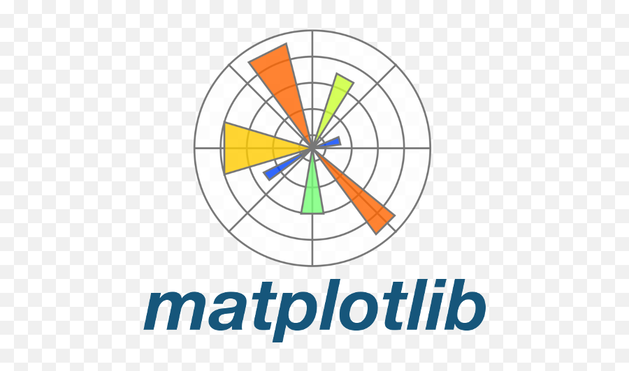
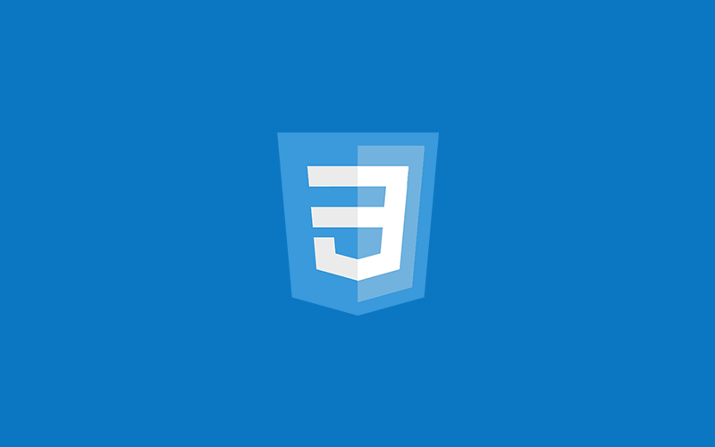

About me..
Hello! I'm a final-year B.Tech student specializing in Artificial Intelligence and Data Science from Salem, Tamil Nadu. My journey in technology has been driven by a profound enthusiasm for machine learning, web scraping, and data processing. Throughout my academic career, I have developed a solid foundation in Python programming and front-end development, which has allowed me to explore innovative solutions to real-world problems. My passion for machine learning fuels my curiosity, leading me to engage in projects that leverage data to create intelligent systems. I am particularly fascinated by the power of data and how it can be transformed into actionable insights. Additionally, I enjoy web scraping, as it allows me to gather and process information from the web, making it accessible for analysis and decision-making. I am eager to continue learning and applying my skills to impactful projects in the field of technology.
Skills







Project
.png)

Contact Me..
aabith1853@gmail.com
9443683982